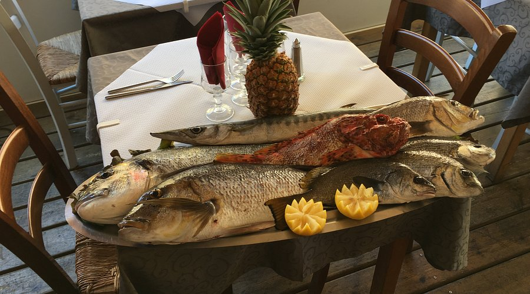
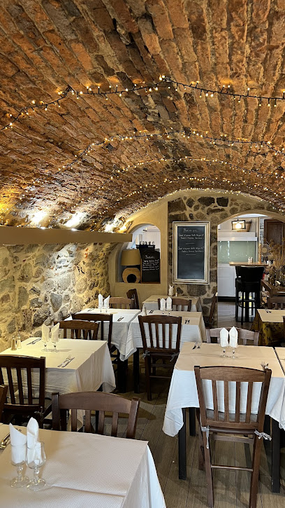
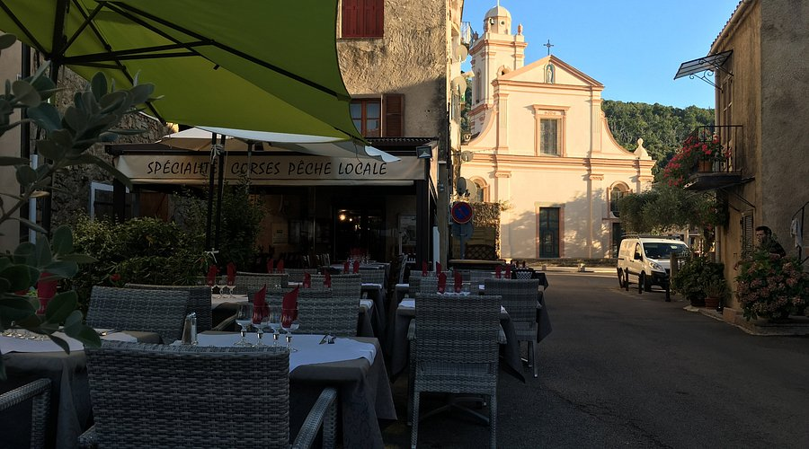
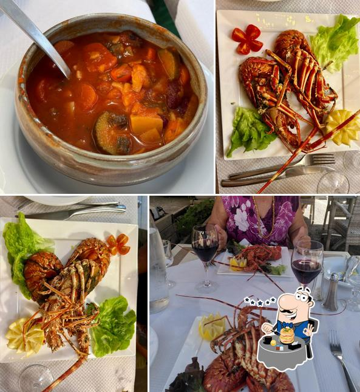
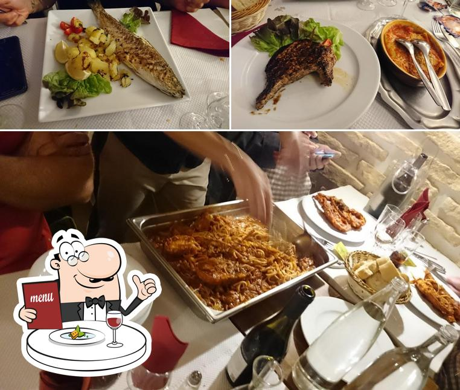
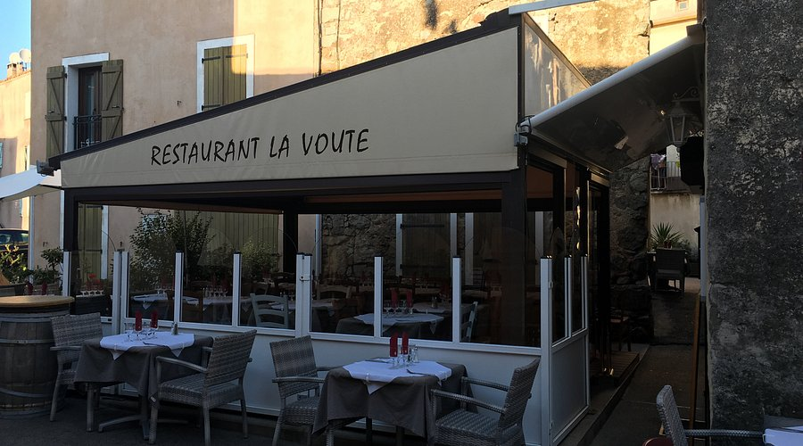
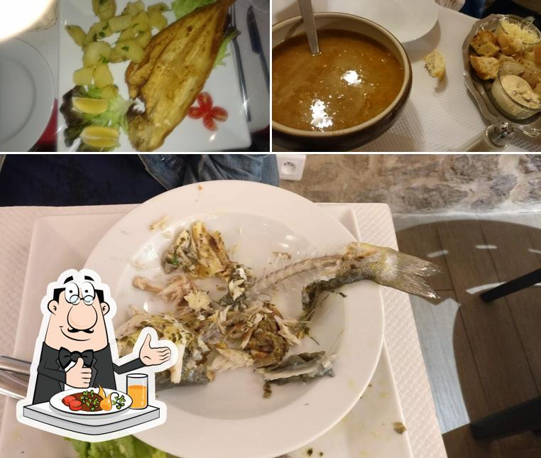
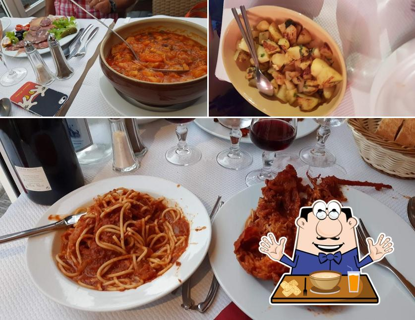
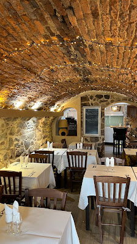

01
La pêche du jour
Le poisson est présenté avant cuisson, droit sorti du Golfe de Porto, cuisiné simplement pour en révéler la fraîcheur.
Restaurant corse . Piana
Depuis toujours, Joseph et Antonella cuisinent ce que la famille pêche dans le Golfe de Porto et récolte dans le maquis. Une maison corse, accueillante, au coeur du village classé de Piana.

Notre maison
La Voûte, c'est l'histoire d'une famille corse qui cultive la terre de Piana et pêche les eaux du Golfe de Porto. Joseph est aux fourneaux, Antonella en salle, et chaque assiette raconte ce que la matinée a rapporté : poisson vivant, cabri d'Antoine, légumes du potager, brocciu fermier.
Sous les voûtes de pierre du village classé, au pied des Calanques, la maison ouvre ses portes 7 jours sur 7, toute l'année. L'accueil y est simple, la cuisine est généreuse, et le plaisir de recevoir se transmet, comme on se passe un plat de cannelloni, de génération en génération.

La carte
Trois signatures qui reviennent dans les avis, saison après saison. La carte complète évolue avec la pêche et le maquis.

01
Le poisson est présenté avant cuisson, droit sorti du Golfe de Porto, cuisiné simplement pour en révéler la fraîcheur.

02
La recette de famille, brocciu fermier et herbes du maquis, gratiné sous une sauce tomate maison. Le plat emblème.

03
Viande corse élevée en famille, longuement mijotée aux olives et herbes de Piana. Une assiette qui a du caractère.
La terrasse et la salle
Pierre chaude, lumière dorée, terrasse ombragée sur la place de la Fontaine.




La parole des tables
sur 1 059 avis Google
Cité dans le guide Le Routard Hôtels & Restaurants de France, classé parmi les meilleures tables de Piana sur TripAdvisor.
"Atmosphère à la fois rustique et chaleureuse. Propriétaires eux-mêmes pêcheurs et agriculteurs, poisson présenté avant cuisson, viande corse, légumes de saison."
"Un vrai régal, cuisine traditionnelle avec des produits ultra frais. Sans doute l'une des plus belles tables de Piana."
"Restaurant familial avec une cuisine authentique. De vraies gens pour qui le mot 'accueil' a un sens."
Venir à La Voûte
La maison est ouverte 7 jours sur 7, midi et soir. Un appel suffit, Antonella vous répondra.